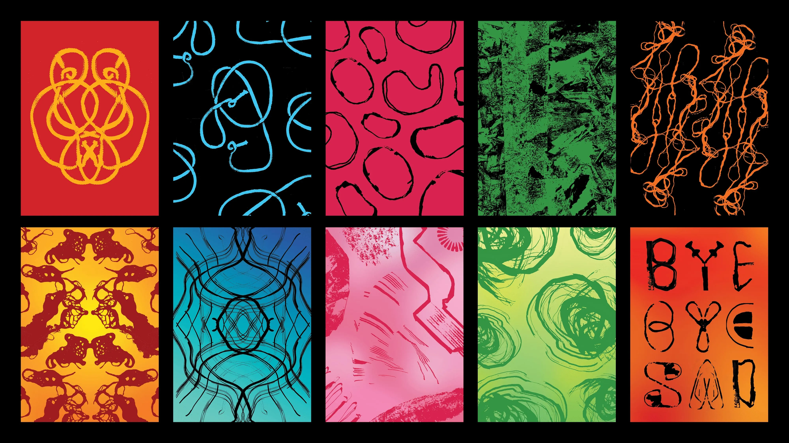
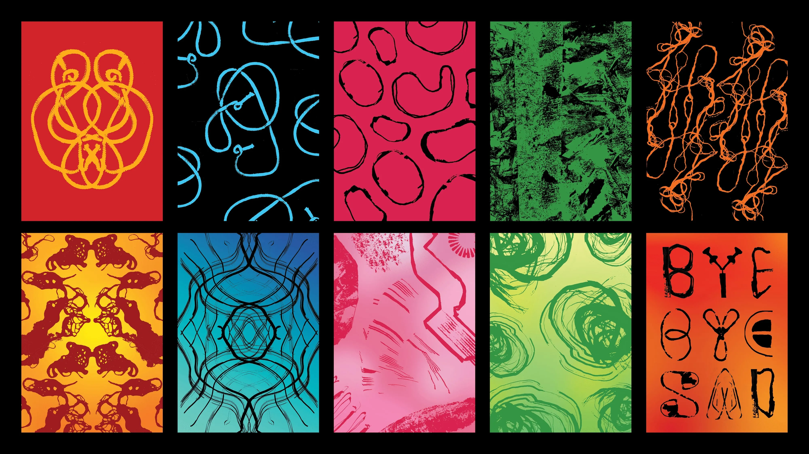

Périlienlogiste
Graphic collection
“Perilienlogiste” is a word for a person who studies the things used to attach one object to another. Inspired by the ordinary objects we often see in everyday life, this collection is a process of experimenting with different methods of obtaining the imprint of these objects, and creating a poster collection from that.


 
